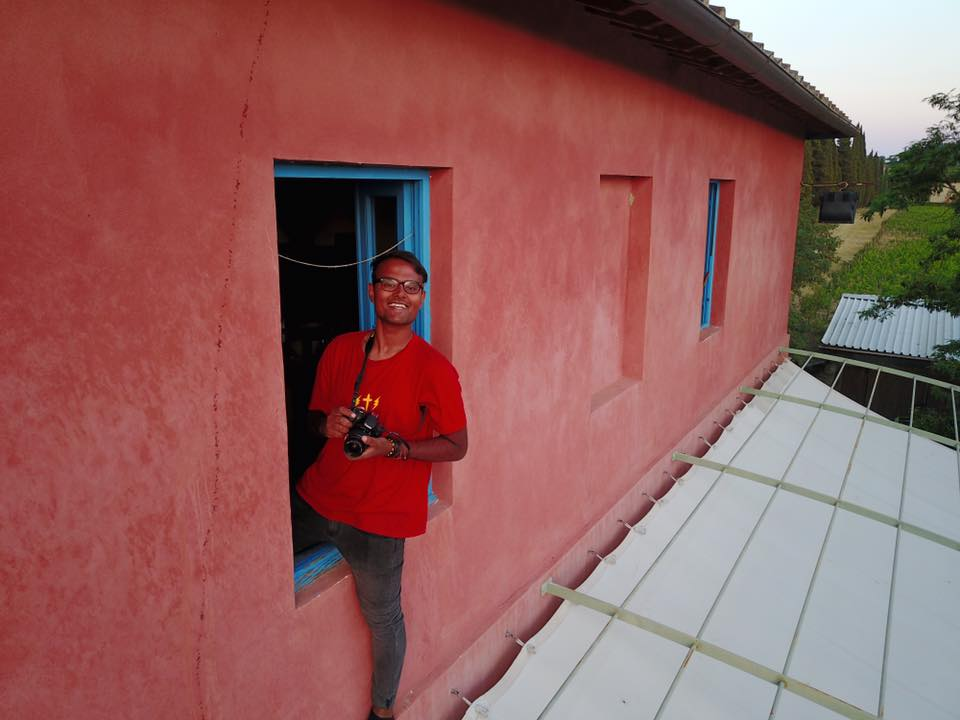

Zieshan Sadiq

About his work
Zieshan is a young individual artist who tries to see the world objectively, documenting his findings through photography. Ever since he was little, he had a passion for shooting photos. Now, years later he made his dream a reality by launching three different series of photos. Being born in Rotterdam, he carries forward the love for this city and the people in it.

His three works are about different themes. Through photos, he connects the urban lifestyle with the fine beauty of nature. In his vision, the glue of this connection is the active role of friends in life.